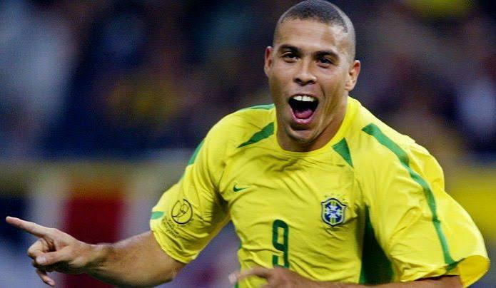
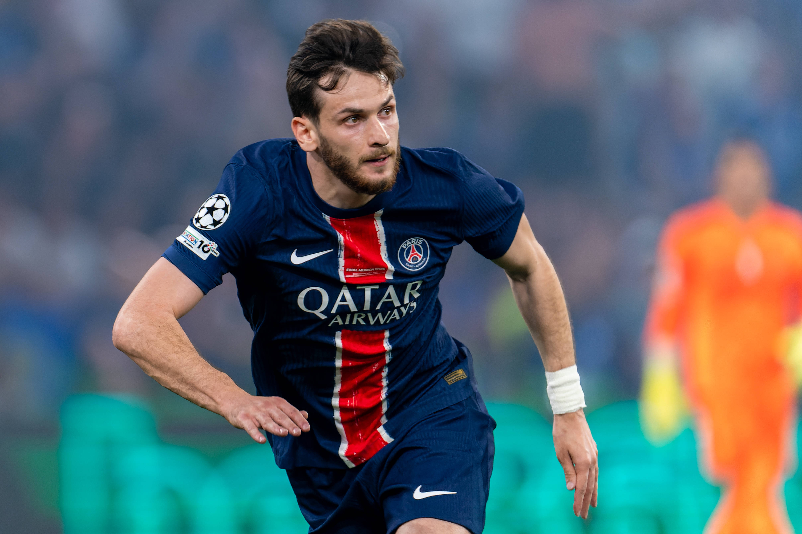
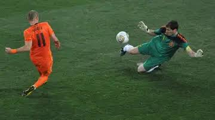
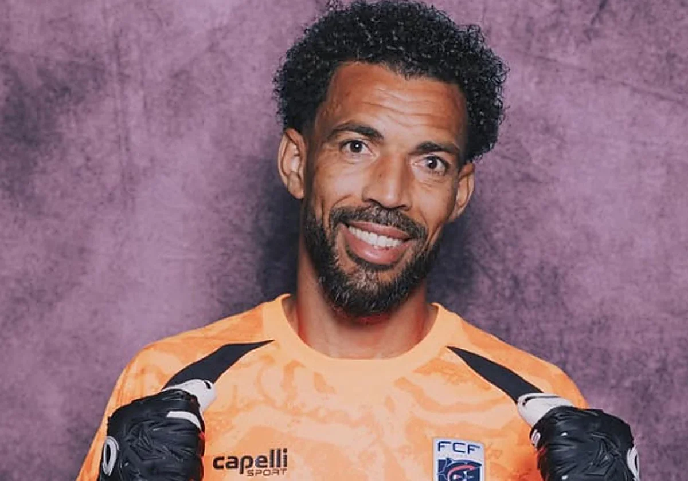
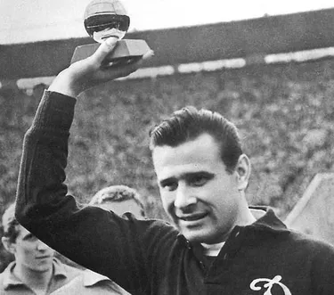
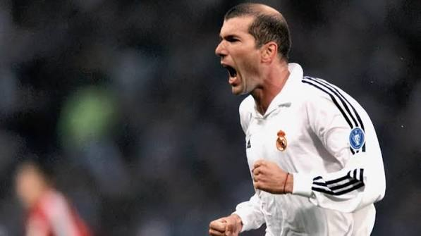
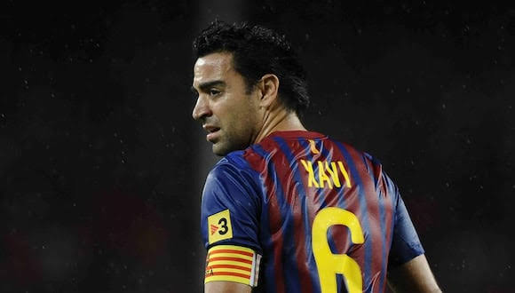
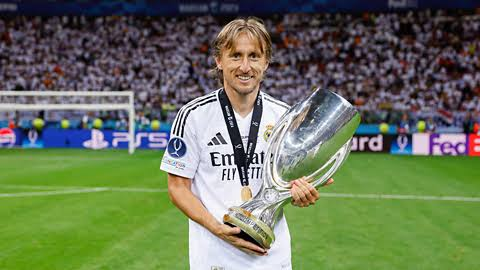
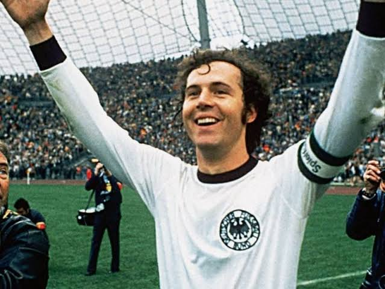
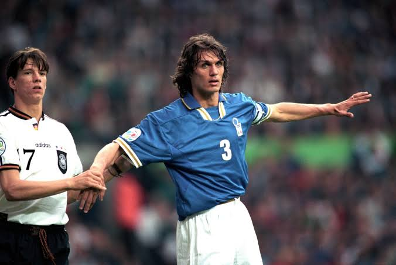

El portero es una de las posiciones más importantes del fútbol. Su origen se remonta a los primeros años del fútbol moderno, cuyas reglas se establecieron en Inglaterra en 1863. Su función principal es evitar que el balón entre en su portería, detener disparos, interceptar centros y organizar la defensa.
Es el único jugador que puede tocar el balón con las manos dentro de su propia área penal, siempre que las reglas lo permitan. Un buen portero necesita reflejos, concentración, coordinación y capacidad para tomar decisiones rápidas. A lo largo de la historia han destacado grandes guardametas como Lev Yashin, Gianluigi Buffon, Iker Casillas, Oliver Kahn y Manuel Neuer, quienes sobresalieron por sus actuaciones y logros.
Con el paso del tiempo, el puesto ha evolucionado y actualmente los porteros no solo defienden su portería, sino que también participan en la creación de jugadas mediante pases y una buena distribución del balón.



El delantero es una de las posiciones más importantes del fútbol, ya que su función principal es marcar goles y generar oportunidades de ataque para su equipo. Desde los inicios del fútbol moderno en Inglaterra en 1863, los delanteros han evolucionado en su forma de jugar, pasando de centrarse principalmente en marcar goles a participar también en la creación de jugadas.
Un buen delantero necesita velocidad, precisión, control del balón, buena definición y capacidad para encontrar espacios entre los defensores. Existen diferentes tipos de delanteros, como los centros delanteros, que suelen jugar cerca de la portería rival, y los extremos, que aprovechan las bandas para crear oportunidades de gol.
A lo largo de la historia han destacado futbolistas como Pelé, Ronaldo Nazário, Lionel Messi, Cristiano Ronaldo, Gerd Müller y Thierry Henry, quienes sobresalieron por sus goles y habilidades. En el fútbol actual, los delanteros también deben presionar a los defensores, asociarse con sus compañeros y participar en la construcción de las jugadas ofensivas.


El mediocampista es una posición fundamental en el fútbol, ya que se encarga de conectar la defensa con el ataque y ayudar a mantener el control del balón. Su función principal es distribuir pases, crear oportunidades de gol, recuperar balones y organizar el juego del equipo.
Existen diferentes tipos de mediocampistas, como los defensivos, que se enfocan en recuperar el balón y proteger a la defensa; los centrales, que ayudan a controlar el ritmo del partido; y los ofensivos, que crean jugadas y generan oportunidades para los delanteros. Un buen mediocampista necesita visión de juego, precisión en los pases, resistencia física, control del balón y capacidad para tomar decisiones rápidas.
A lo largo de la historia han destacado futbolistas como Zinedine Zidane, Andrés Iniesta, Xavi Hernández, Luka Modrić y Diego Maradona, reconocidos por su técnica y creatividad. En el fútbol moderno, los mediocampistas son esenciales para mantener el equilibrio del equipo, organizar los ataques y contribuir tanto en defensa como en ofensiva.



El defensa es una posición fundamental en el fútbol, ya que su función principal es evitar que el equipo rival marque goles y proteger la portería. Su trabajo consiste en interceptar pases, bloquear disparos, recuperar el balón y detener los ataques del adversario. Existen diferentes tipos de defensas, como los centrales, que se encargan de proteger la zona frente a la portería, y los laterales, que defienden las bandas y también pueden apoyar al ataque.
Un buen defensa necesita fuerza, velocidad, concentración, buena colocación y capacidad para anticiparse a las jugadas del rival. A lo largo de la historia han destacado futbolistas como Paolo Maldini, Franz Beckenbauer, Sergio Ramos, Carles Puyol y Fabio Cannavaro, reconocidos por sus habilidades defensivas y sus logros. En el fútbol moderno, los defensas no solo protegen su portería, sino que también participan en la salida del balón, realizan pases precisos y colaboran en la creación de jugadas ofensivas.

